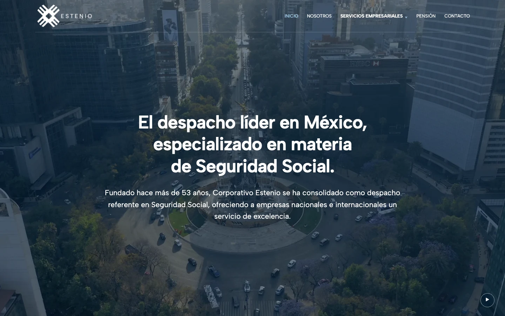
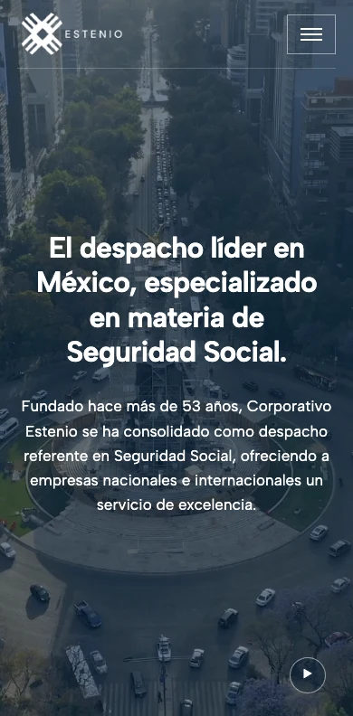
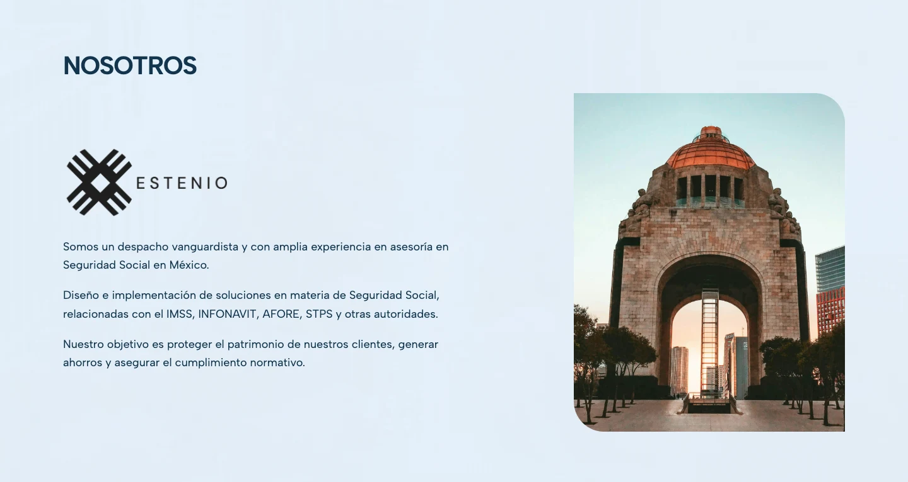
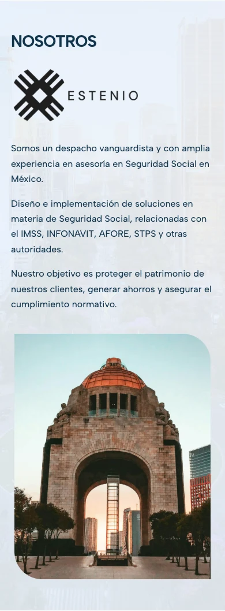
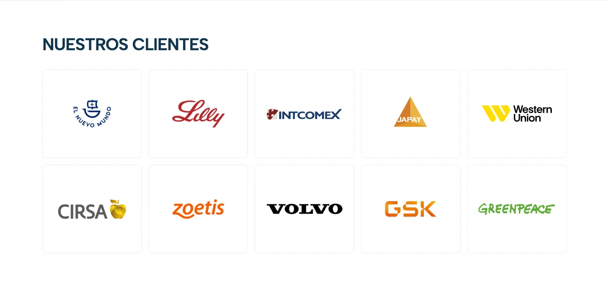
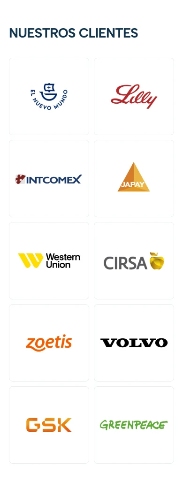

Estenio — captures de validation
Captures du navigateur : ordinateur 1440 px et mobile 390 px. Les images s’ouvrent dans leur résolution native. Le hero a été figé à deux secondes pour la capture ; la vidéo se lit sur le site.
Hero vidéo


Nosotros


Clients

